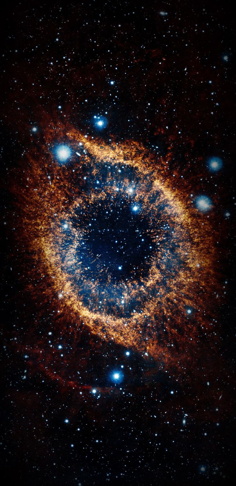
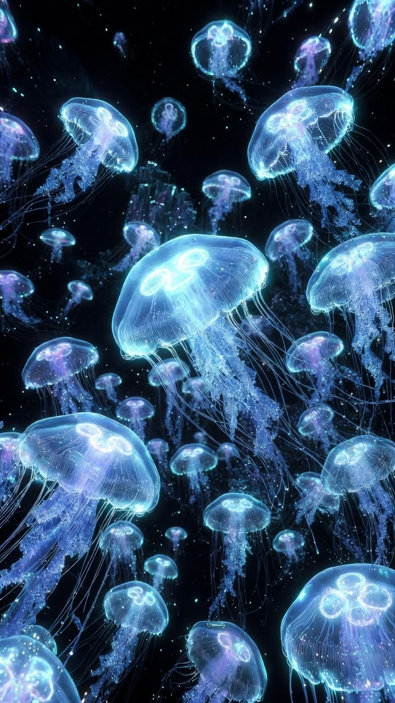
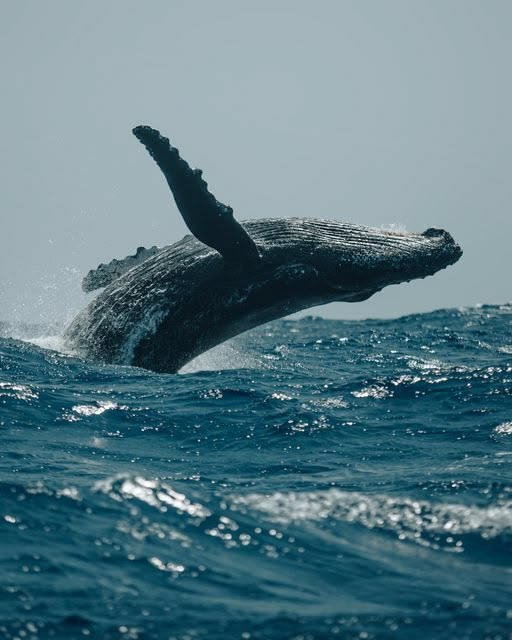

ตามพร ลุงทุนชื่อเล่น: แก้มใส
ยินดีต้อนรับสู่เว็บที่เอาไว้แนะนำสิ่งที่ฉันชื่นชอบ ✨
MY WEBSITE

ตามพร ลุงทุนชื่อเล่น: แก้มใส
ยินดีต้อนรับสู่เว็บที่เอาไว้แนะนำสิ่งที่ฉันชื่นชอบ ✨

jellyfish

Whale

Astronomy

Phoenix A

Supernova
D GERRARD - ซูเปอร์สตาร์ (SUPERSTAR)
Dark Dream (《诡秘之主小丑篇》动画片尾曲)
A Stranger（Lord of Mysteries · Clown Arc： Impression Theme Song）
Praise The Fool《赞美愚者》
《Morimens》丨ED——「Ex Oblivion 來自遺忘 ▼」